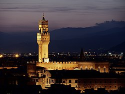

Фиренца (итал. Firenze) је велики град у централној Италији, који је октобра 2009. имао 371.060 становника. У ширем подручју Фиренца-Прато-Пистоја живи 1,5 милиона људи. Фиренца је главни град истоименог округа и главни град покрајине Тоскана.

У средњем веку Фиренца је постала важно економско, културно и финансијско средиште. Током новог века, била је престоница Великог војводства Тоскане под доминацијом породица Медичи и Лорена. Град је био прва престоница Италије у периоду 1865—1871. године, после уједињења Италије.
Име Фиренца град је добио при свом оснивању у време Римљана под Гај Јулије Цезаром, који су овде основали утврђено насеље под називом Florentia (цветна). Овај назив очувао се и данас са променама у неким језицима (обично Фиренца или Флоренца).
Фиренца се развила у северном делу покрајине Тоскане. Град је већим делом на равничарском терену (долина реке Арно), али је мањи, јужни део брежуљкастог карактера. Са севера се лако сагледавају оближње планине из ланца Апенина. Град се простире на висини од око 100 m, али су ободни делови приметно виши.
Клима у Фиренци је измењена средоземна клима са утицајем удаљености града од мора. Стога је у лето веома топло, а зими је снег могућа појава и хладније је у односу на већи део Италије јужно
| Назив знамености | Порекло/Период | Опис |
|---|---|---|
| Ponte Vecchio | 1345.godine | Najstariji preživeli most u gradu |
| Fontana Del Porcellino | 1633.godine | Delo baroknog vajara Pjetra Take |
| Palata Vekio | 1299.godine | Predstavlja gradsku vecnicu |